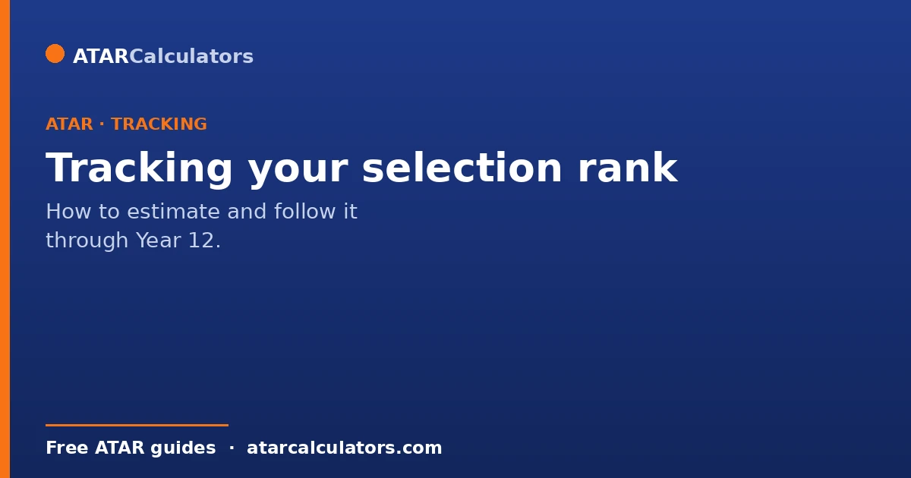
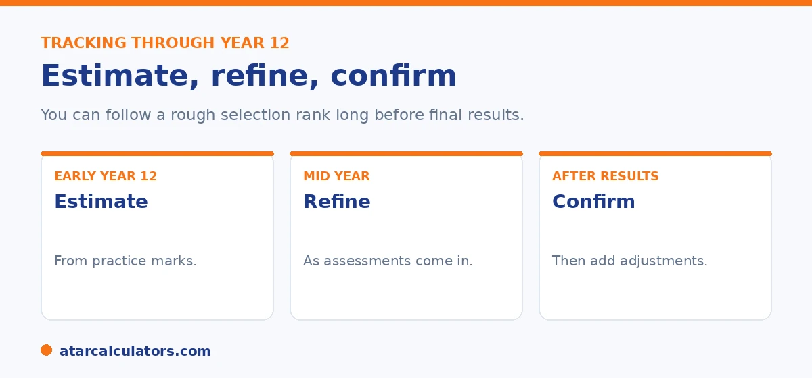

Here is the short version. You can follow a rough selection rank long before final results. Early in Year 12, estimate from practice marks. As real assessments come in, refine the estimate. After results, confirm your ATAR and add any adjustments to get your selection rank. Treat early estimates as a guide for planning preferences, not a fixed prediction.
Waiting for results can feel like flying blind, but you can track a rough selection rank the whole way through Year 12. It helps you plan with less stress.
Below is how to follow it, step by step. To estimate at any stage, use our selection rank calculator.
Key takeaways
- You can follow a rough selection rank before final results.
- Early on, estimate from practice marks.
- As assessments come in, refine the estimate.
- After results, confirm your ATAR and add adjustments.
- Treat early estimates as a guide, not a fixed prediction.
- Use it to plan your course preferences sensibly.
Early in Year 12: estimate
Early in Year 12, you will not have much hard data, but you can still make a rough estimate. Use practice exams, early assessments, and your general standing in each subject to gauge where you might land.

Keep it loose. The point is a ballpark, so you can start thinking about realistic courses rather than guessing in the dark.
Mid-year: refine
As the year goes on and real assessments come in, refine your estimate. Each major assessment gives you better data on where you sit, especially in your stronger and weaker subjects.
Remember that scaling affects your final ATAR, so your raw marks are not the whole story. Use your estimate as a moving picture, updated as you learn more.
Want to estimate at this stage?
Try the selection rank calculator →After results: confirm and adjust
Once your ATAR is released, the guessing ends. Now you have your fixed rank. The final step is to add any adjustment factors you qualify for, which gives your selection rank for each course.
This is when early planning pays off. If you have tracked your rank, you will already have a shortlist of realistic courses, and you can act quickly when offers open. See our selection rank guide.
Factor in adjustments early
Do not leave adjustments to the last minute. If you might qualify for the Educational Access Scheme or an elite athlete scheme, those need a separate application, often well before offers.
Work out early which adjustments you expect, and add them to your tracked rank. That gives a more realistic picture than ATAR alone. See our checklist of boosts.
The reason to sort adjustments early rather than late is that some of the most valuable ones need action on a deadline you cannot recover if you miss it. Subject bonuses are usually applied automatically for local students. But equity schemes like the Educational Access Scheme, elite-athlete schemes and some regional schemes need a separate application with supporting documentation. And those applications often close well before offers are made. A student who assumes everything is automatic can reach offer round having forfeited points they were entitled to, simply because no one applied in time. Tracking your selection rank, rather than just your ATAR, keeps this front of mind. As you estimate your rank through the year, you build in the adjustments you expect and are reminded to lodge any that need a separate claim. It also gives you a more realistic sense of which courses are within reach. This is because comparing your bare ATAR to a cut-off understates your position when adjustments apply. The practical routine starts early in Year 12. List every scheme you might qualify for. Note which are automatic, and which need an application and by when. Lodge the ones that need action ahead of their deadlines. Then fold the expected points into your tracked rank. That way your planning reflects the number universities will actually use. And you never lose an advantage to a missed date.
Use it to plan your preferences
The real value of tracking is in your course preferences. With a rough selection rank in mind, you can build a balanced list: some ambitious choices, some realistic ones, and a safe option.
That way, whatever your final rank, you have a strong preference list ready. Tracking turns results day from a shock into a plan you simply confirm.
Common questions
How do I track my selection rank in Year 12?
Start with a rough estimate from practice marks early in the year, refine it as real assessments come in, then confirm your ATAR after results and add any adjustments. Use it to plan your course preferences.
Can I estimate my selection rank before results?
Yes, roughly. Use practice exams and assessments to estimate your likely ATAR, then add any adjustments you expect. Treat it as a guide for planning, not a fixed prediction, since scaling affects the final ATAR.
How do I know if I'll meet a course cut-off?
Compare your estimated selection rank, not just your ATAR, to the course's recent cut-off. Remember cut-offs change each year and are a guide, so plan a balanced list of preferences rather than relying on one number.
When should I apply for adjustments?
Work out early which you expect. Subject and location adjustments are usually automatic. But the Educational Access Scheme and elite athlete schemes need a separate application, often well before offers open.
Does scaling affect my tracked rank?
Yes. Scaling adjusts subject results when your ATAR is calculated, so raw marks are not the whole story. Treat any pre-results estimate as a guide, and confirm once your actual ATAR is released.
Track your selection rank
Estimate your rank at any stage of Year 12. Free, and no signup.
Open the selection rank calculator →Related guides
This guide is general information for students and parents, not formal admissions advice. Adjustment factors, schemes, caps and course cut-offs are set by each university and can change every year. They differ from one institution to another, and from course to course within the same institution. Always confirm the current details with the specific university and your state admissions centre (UAC, VTAC, QTAC, SATAC or TISC). A useful starting point is UAC's guide to selection rank adjustments. Reviewed by the ATARCalculators Editorial Team.